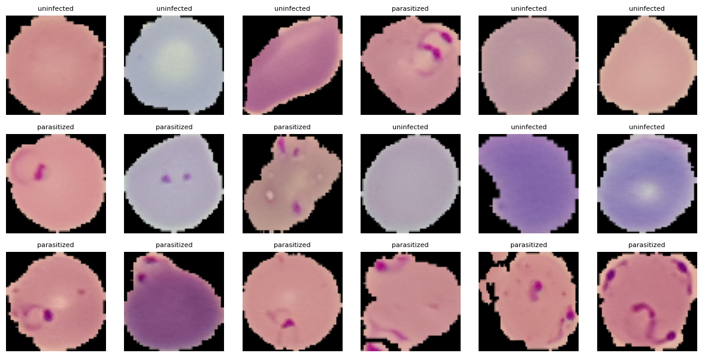
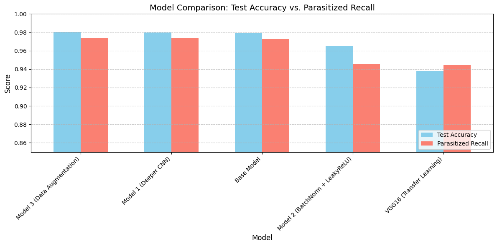

Automated Malaria Detection using Deep Learning
Building a lightweight deep learning model that can automatically detect malaria parasites in blood smear images, to support faster diagnosis at the point of care.


97.38%
Recall on parasitized cells
40%
Fewer parameters than the top-scoring model